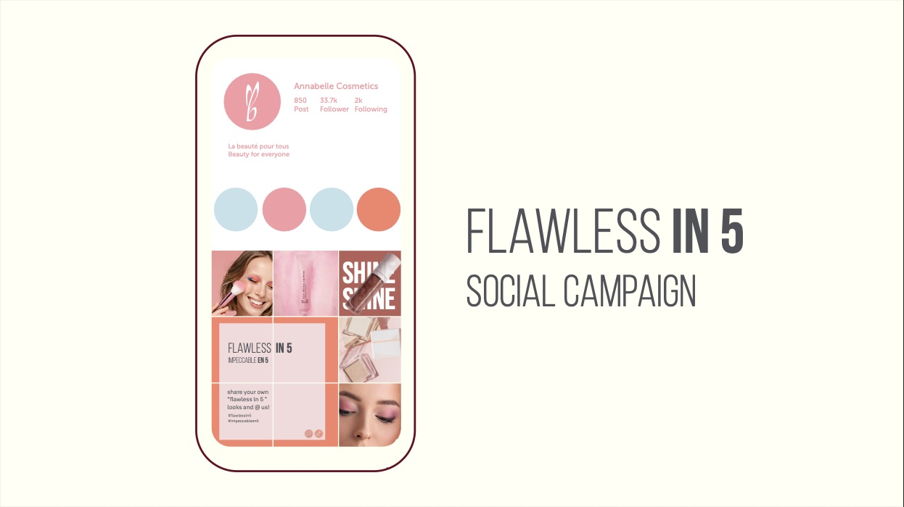
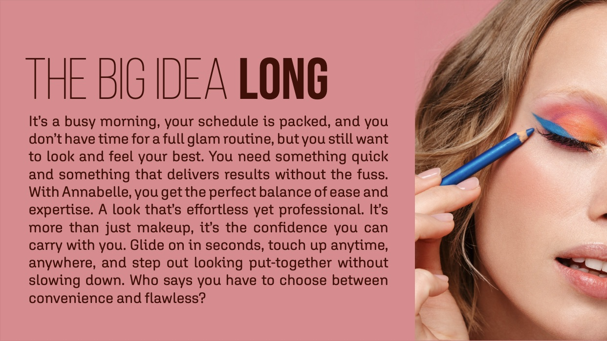
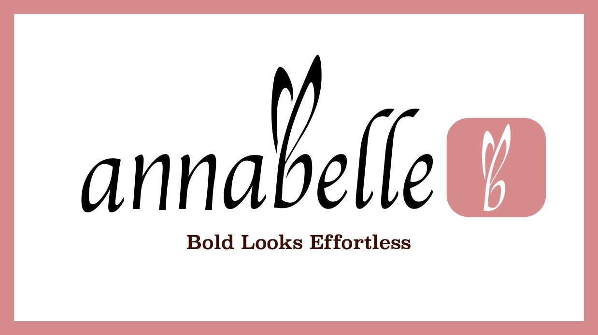
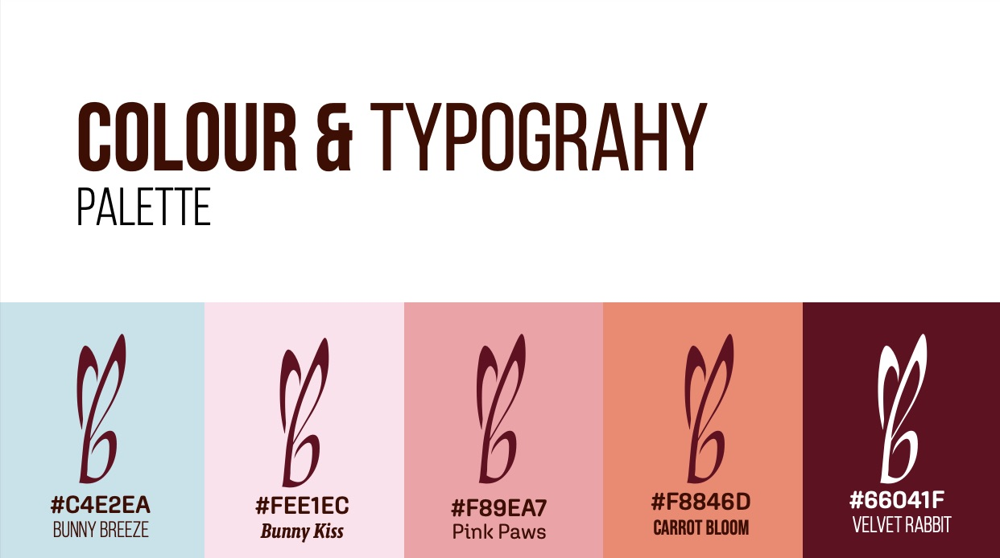
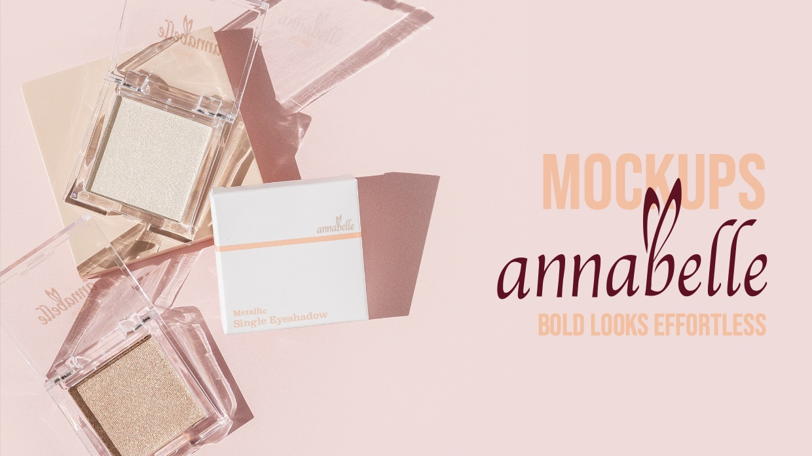
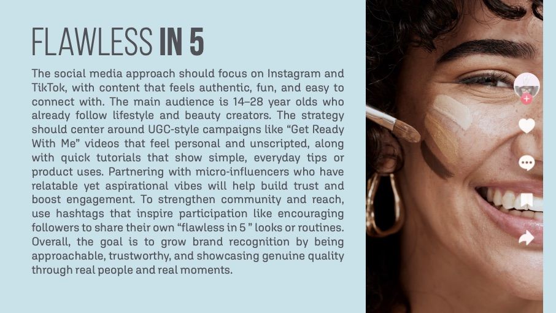
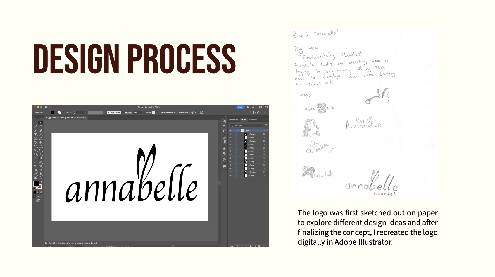
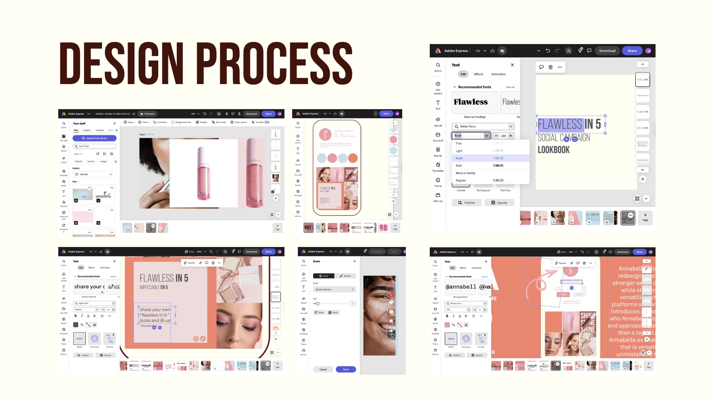

Branding / Rebrand Case Study
A rebrand concept for Annabelle Cosmetics focused on refining the brand’s visual identity, clarifying its messaging, and creating a more cohesive system across logo, packaging, and campaign design.

Annabelle is a Canadian drugstore cosmetics brand known for colourful, affordable, cruelty-free beauty products with everyday appeal. This project explored how the brand could feel more distinctive, polished, and current while still staying accessible to its audience.
The goal of the rebrand was not to completely reinvent Annabelle, but to strengthen what already made it recognizable and give it a clearer visual identity across multiple touchpoints.
My role: I developed the rebrand concept, designed the updated logo, defined the colour and typography direction, created mockups, and built the campaign idea and supporting visual applications.
The existing brand had recognition and accessibility, but it lacked a stronger sense of identity and consistency. I wanted to create a system that felt more confident and memorable while keeping the brand approachable.
I also needed to show how a rebrand for an existing company can stay aligned with the brand’s core values while still reflecting my own design decisions and creative direction.
“Fundamentally Flawless”
The big idea behind the rebrand was Fundamentally Flawless. This direction framed Annabelle as a brand that makes beauty feel easy, approachable, and confidence-building. It focuses on products that are simple to use but still help the user feel polished and put together.
That concept became the foundation for the visual identity, campaign tone, and brand applications that followed.
The project positioned Annabelle toward younger consumers and everyday makeup users looking for accessible, affordable beauty products that still feel reliable and expressive. This helped shape a design direction that was both playful and polished.
I wanted the rebrand to feel current and confident, while keeping the brand’s identity rooted in accessibility and broad appeal.

The logo redesign aimed to give Annabelle a stronger visual presence while remaining versatile across products and platforms. I wanted the updated mark to feel more distinctive, confident, and recognizable without losing the brand’s accessible character.
Bold looks effortless.

The visual system uses bright, approachable colour with a more unified and intentional structure. The palette helps the brand feel fun and youthful, while the typography adds clarity and consistency across applications.
This part of the project was important because it translated the brand idea into a system that could be used repeatedly, not just in one isolated design.

I applied the rebrand across mockups to show how the identity could work in packaging and promotional contexts. These applications demonstrate how the system maintains a consistent look while adapting to different formats.
This helped show the project as a complete identity system rather than only a logo exercise.

To extend the identity beyond packaging, I created the campaign direction Flawless in 5. The idea was built for social platforms and focused on short, relatable beauty content that feels fast, authentic, and easy to engage with.
This campaign showed how the brand could live in a more contemporary digital space while staying aligned with its audience and overall identity.

The project moved from written analysis and concept development into sketching, digital refinement, and final mockup creation. This process helped me connect strategy with execution and make sure the visuals were supported by a clear idea.
It also allowed me to show not only the final rebrand, but how that rebrand was built through research, concept thinking, and application.


The final outcome is a more cohesive and recognizable rebrand that gives Annabelle a clearer voice and stronger visual identity. It demonstrates my ability to work with an existing brand, identify areas for improvement, and build a system that is both strategic and visually polished.
More broadly, this project shows the kind of work I want to continue doing: branding that combines analysis, visual storytelling, and flexible design systems.
Additional video content related to the project.
Short-form video for social media.
Short-form video for social media.
Short-form video for social media.